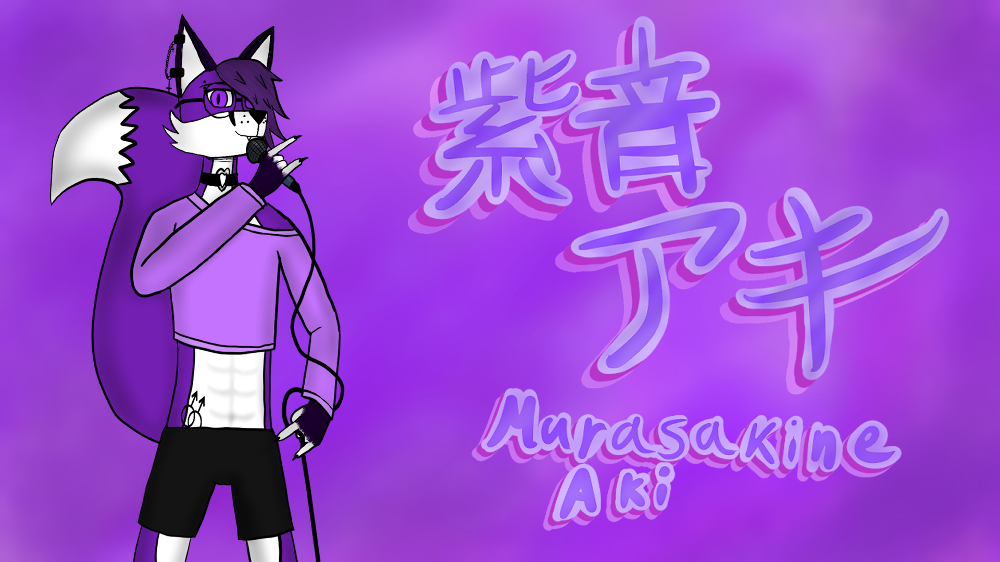

Фиолетовый лис
Войсбанк
О персонаже
Мурасакине Аки-антропоморфный фиолетовый лис, похотливый но стеснительный парень лет 19. Он очень обожает онигири, его рост 171 см, носит кроп-топ нежно-розового цвета, чёрные спортивные шорты, пирсинг на ухе и брови и круклые очки с чёрной оправой, носит длиную чёлку
Голосовой банк
Войсбанк персонажа был записан любителем, но зато с душой))
Характеристики
- 2 часа записи голоса
- может петь на высоких нотах
- войсбанк на японском языке
- Чистое звучание
- Записан в формате .wav